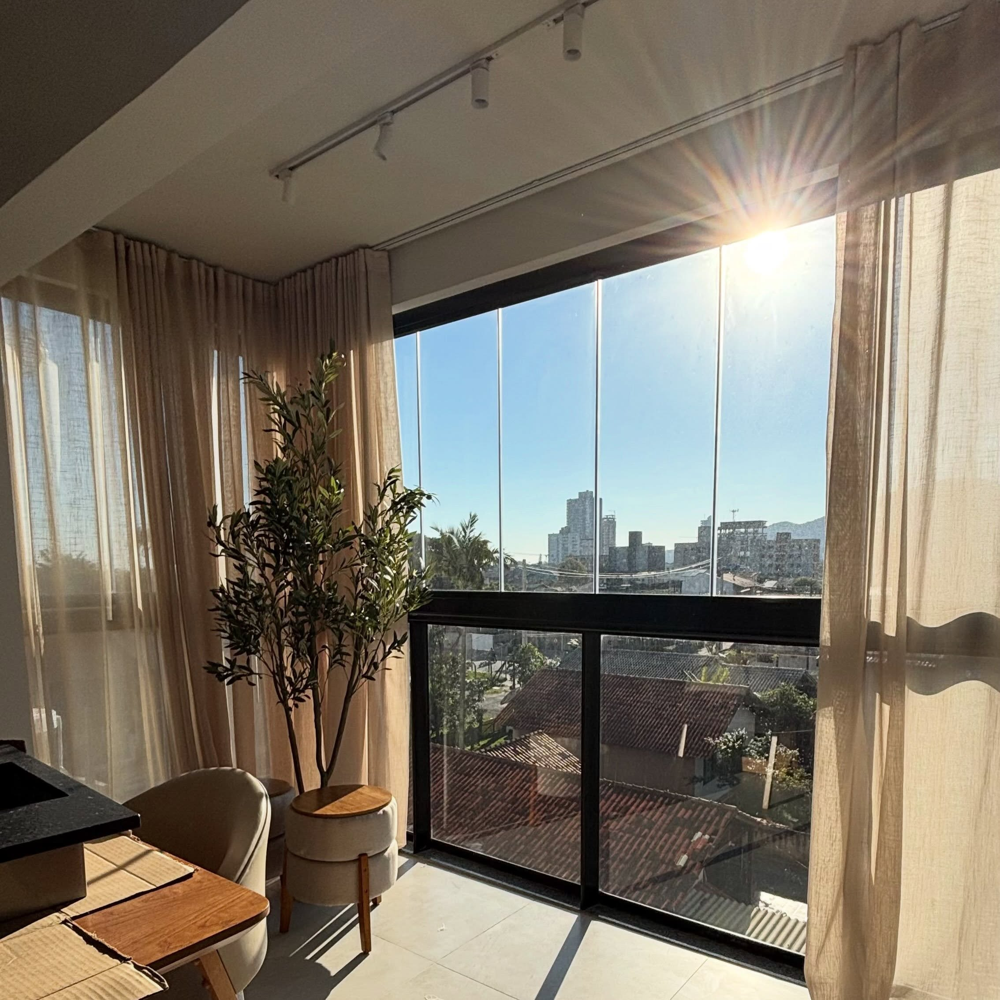

O corte é na tábua.
Use tábuas para cortar os alimentos. Evite cortar diretamente na bancada ou na mesa.

☼ PENHA, SANTA CATARINA
Bem-vindo ao Apê Parque Praia.
Um cantinho para desacelerar e se sentir em casa.
01 — CUIDADOS QUE FAZEM A DIFERENÇA
A cozinha está aqui para você aproveitar — e para os próximos hóspedes também. Pequenos cuidados deixam tudo melhor.
Use tábuas para cortar os alimentos. Evite cortar diretamente na bancada ou na mesa.
Nada de panela quente direto nas superfícies. Use os descansos disponíveis na cozinha.
Não arraste panelas, eletros ou objetos. Assim evitamos riscos e marcas nas superfícies.
Use cada aparelho conforme sua finalidade. Ficou em dúvida sobre como usar? Consulte um vídeo explicativo no YouTube. Ao sair, confira se estão desligados e, quando possível, retire-os da tomada.
Evite jogar restos de comida ou gordura na pia. Descarte os resíduos antes de lavar a louça.
Deixe a cozinha organizada para o próximo uso. É bom chegar e encontrar tudo no lugar.
Sentiu falta de algo?Envie sua sugestão ao anfitrião. Vamos adorar saber.
As plantinhas já têm quem cuide.Não precisa molhar as plantas naturais. Elas recebem água regularmente.
Obrigada por cuidar do nosso cantinho! ♡
02 — UM POUQUINHO DE ATENÇÃO
Antes de abrir, veja como funciona. Preparamos este espaço para você consultar as orientações com tranquilidade.
A sacada é a única parte do apê que não possui rede de proteção. Se houver crianças, mantenha-as sempre sob supervisão e tenha cuidado redobrado com a sacada aberta.
Ainda não recebeu as instruções? Solicite ao anfitrião ↗